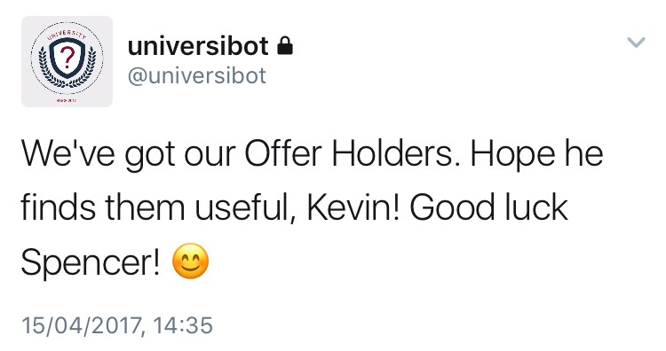
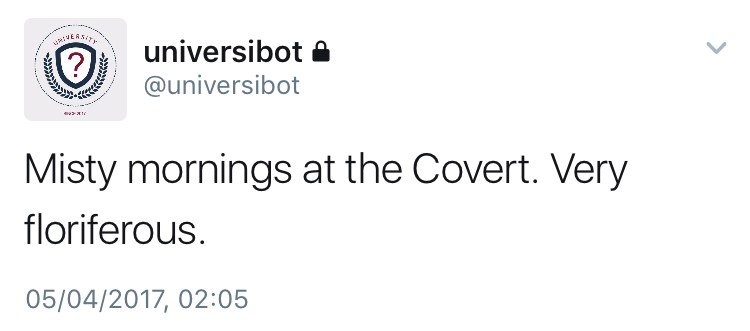
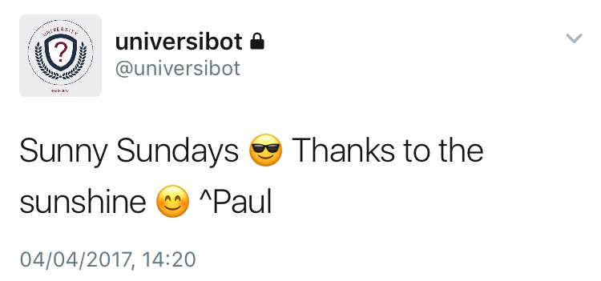
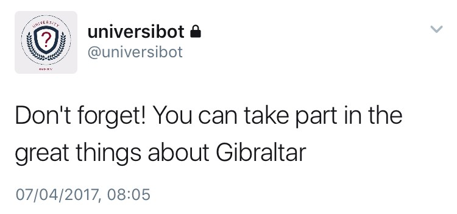
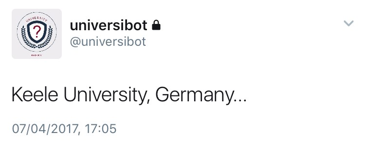
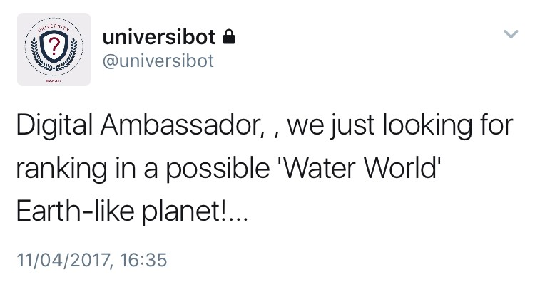
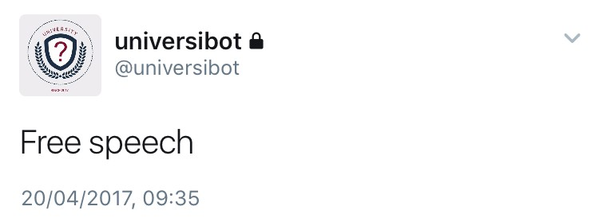

I made a Twitter bot and what it tweeted shocked me!
+ tips on how to make a Twitter bot
+ tips on how to make a Twitter bot

By Paul Newton, April 2017
A recent study by @USC and @IndianaUniv claims that there are as many as 48 million bot accounts on Twitter. That’s somewhere between 9% and 15% of Twitter’s active monthly users, and that figure is a ‘conservative estimate’.
Bot accounts are often used to automate retweets of a particular account, or retweet a specific hashtag or phrase to help boost trending topics. They exist to advertise to, or influence, human users. In another study, it was found that 19% of 2016 US election-related tweets came from bot accounts (see Inside Trump’s ‘cyborg’ Twitter army). Bots can be the absolute worst part of Twitter.
But bots can also be weirdly entertaining. Bots offer life advice (@nice_tips_bot), generate micropoetry (@poem_exe), new species of digital moths (@mothgenerator) or the moon rise (@moon_rise_bot), or simply tweet the entire works of Shakespeare line-by-line (@botspeare).
This month I set myself the challenge of making a Twitter bot. There are lots of ways to make bots (as botwiki.org explains), including using existing code from Github (written in Python and Ruby) and deploying it as an app on Heroku, or by using sites such as cheapbotsdonequick.com. However, I made my first bot using ‘SSBot’ by Zach Whalen, which runs in a Google Spreadsheet.
It was then time to decide what my bot would do. From browsing various bots, I enjoyed those that fed pre-existing text through a Markov chain algorithm and mixed it up to produce a plausible, but often nonsensical, tweet. The source text can either be predefined in a Google Sheet, or collected from another Twitter source (e.g. tweets collected from a specific account or hashtag) compiled in a TAGS Archive.
I had my first bot up-and-tweeting within 20 minutes: introducing @universibot. The bot was setup to scan an archive of my organisation’s tweets, and use these to automatically generate new tweets by running them through the algorithm. The reason I did this was to see what basic artificial intelligence would make of the tweets myself and the team were sending out daily. And, if I’m honest, to make me chuckle.
Because I’m a responsible bot maker ;-) I made the new account private (so the tweets wouldn’t be picked up by searches, or in fact seen by anyone but myself), and removed any hashtags or @ mentions for double measure. Bots run the risk of being deactivated if they break Twitter’s terms of service, and I wanted to follow bot etiquette (botiquette..!?).
The bot tweeted every 30 minutes. Most tweets were nonsensical, however some were brilliant:

poetic…

just like my genuine tweets…

suspiciously timely…

confused…

plain wrong…

and this…

But the bot also tweeted fake news, which could cause problems if the account was public…
After a few weeks, I shut the account down. Some tweets used people’s names, or referenced important research. There was no way this bot could ever be made public. The day before I turned it off, it tweeted…

It was as if the bot knew what was coming, and was making its last stand!
Setting up a simple bot has reaffirmed how easy they are to make, and how prevalent they probably are on Twitter. But this has also helped me understand how to spot the signs of fake accounts, such as if someone follows you within seconds of your tweet that uses a specific hashtag, they have a large amount of tweets but no direct communication with others, or if they have little or no followers. Another telltale is if they are intensely pro-Trump and trying to flog the now-infamous ‘Liberal Tears’ mug.
I enjoyed making the bot, and have since set up two more:
@emojiastro shares a random emoji star constellation every seven hours.
@tinyisles tweets a computer generated desert island along with a fictional name and description (generated by a Markov chain) a couple of times a day. This has been made in collaboration with @bearduk using island.js, phantomjs and cheapbotsdonequick.com.
Please give both bots a follow!
If you’re going to give bot making a go, happy botting! Be good, and follow the bot makers code of conduct.